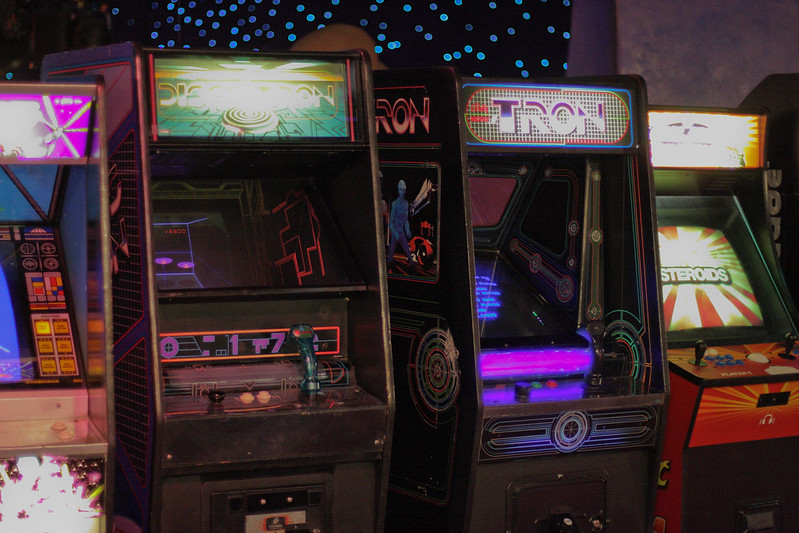

1947
First interactive game with an electronic display created, sparking new ideas through the use of digital media.
Cathode Ray Tube
The 1950s
First video games created, setting a stage for a new and unique form of entertainment.
Tennis for TwoThe 1970s
Early arcade video games like Pong are released, marking the beginnings of public interest in video games.
Pong1972
Magnavox Odyssey, the first home gaming console, launches, making video games accessible to homes all over.
Magnavox Odyssey1980
In the US, video games surge in popularity and were consuming 11.2 billion quarters annually, $2.8 billion in revenue.
U.S. Industry The 1980s
The estimated revenue was $5 billion, exceeding the income of the entire US film industry for the first time.
The Golden Age